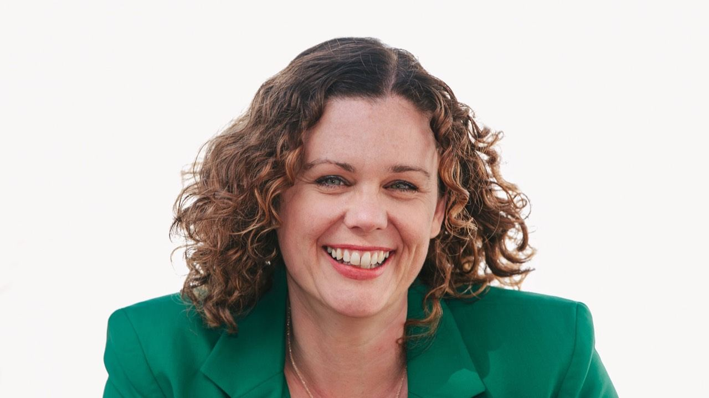

Questions, answered

Anything not here? Email otyourselftofreedom@gmail.com or book a call.
Do I provide one off coaching sessions?
I am happy to offer an initial chat to see whether we would be a good fit to work together, but I do not find one off sessions as effective at meeting bigger goals. I would rather work with people who are fully committed to creating change at a deeper level.
What Qualifications Do I Have?
I am a fully qualified UK Occupational Therapist BSc (hons) with an extra degree in IT and Social Sciences BSc (hons) just for fun, although I decided not to renew my.OT registration after I went travelling the world in 2019 as I no longer needed it. I hold a Coaching Accreditation from the Coaching Masters who are registered under the IAPC&M, equivalent to level 4. I am trained in Neuro Transformation Therapy techniques which focuses on the deeper subconscious work in order to create permanent and lasting change. I am extending this training to Master level and this qualification will be coming next!
For the past 4 years I have invested heavily into my growth and personal development. I have worked with a number of 6 and 7 figure business mentors to improve all aspects of what I offer. I keep abreast of the continually changing sales and marketing strategies. I also work with spiritual based coaches to improve aspects of what I offer and I am currently training to become a conscious breathwork facilitator.
It is this investment into my own learning that has enabled me to make fast progress within the business.
What happens if I am unhappy with the service?
There is always a 14-day money back guarantee, meaning you have sufficient time to explore the programme. Please also feel free to discuss any personal requirements that you feel could be improved as I value feed back and this is a continuously improving service.
Who are the main clients I work with?
I work with new or struggling entrepreneurs who are creating businesses with an online focus. The business does not have to be fully online, but most of the marketing can be. I have worked with many coaches, Occupational Therapists, Teachers, Dieticians and a Functional Health Practitioner.
The systems are easy to follow and are designed to stop you wasting time on low profit actions. Most of my clients are in work when they start working with me and many have families, so time is important to them. Most of my clients struggle with low self-belief, a lack of confidence or find that they are procrastinating in getting started. Many clients report to feel overwhelmed, and benefit from me breaking it down into small and simple steps.
What Results Can I Expect?
The system I am teaching is the same approach that caused me to have $4k months immediately at the start of my business, and to be able to hit $6.5k within 4 months. These same systems that have allowed my business to continuously grow, to $10k months and more, organically and without the need for ads.
Clients can expect to achieve the same when they follow the techniques and strategies. I take on very new entrepreneurs who only come to me with an idea and have found clients able to take on their own clients within 2 weeks.
I have helped a number of clients to leave their paid employment very soon after starting the programmes. Of course success depends on how much energy and commitment each client applies as to how successful they are.
Links to Social Media
Group for Occupational Therapists all across the world who wish to improve their own lives and create freedom and fulfilment. Note: You need to be an OT to be able to join this group.
facebook.com/groups/733210681391260/
Group for new entrepreneurs to learn how to save time, gain self-belief and build aligned businesses that allow for a freedom lifestyle!
Are you a registered Occupational Therapist?
I was registered until 2019 when I left the profession to travel the world.
Can Occupational Therapists start an online business?
Absolutely! More OTs (OTPs) than ever are transitioning online, using skills they already have to create high-ticket coaching, consulting, and education-based offers. With the right strategy, you can build a profitable online OT business that provides financial freedom, flexibility, and deeper impact - without burning out in traditional healthcare systems.
What kind of online business can an Occupational Therapist create?
Occupational Therapists have high-value skills that translate beautifully into an online model , including:
- Coaching (helping clients achieve specific life or professional goals)
- Consulting (providing expert advice in niche areas like paediatrics, mental health, or rehabilitation)
- Course Creation (developing training programmes for clients or professionals)
- Supervision & Mentorship (supporting new grads or other healthcare professionals)
- Education (e-books, learning platforms, workbooks, templates for specific OT interventions)
The key is designing an offer that is scalable, high-value, and aligned with your expertise . If you don’t have a large audience and you try to sell low-cost items, it can take you years to replace your OT income.
By switching into high ticket-offers, even though this feels strange at first, my clients are able to double their income within months instead of years..
How do I transition from clinical OT to an online business?
The transition starts with clarity - understanding your unique strengths and how they can solve problems for a niche audience. My programme walks OTs through: 1. Finding your niche, identifying a profitable, passion-aligned audience
2. Designing your high-ticket offer, packaging your expertise into a premium service
3. Marketing & sales strategies, learning how to attract and convert clients online
4. Scaling for success, automating and streamlining your business for long-term growth
5. Develop the Mindset of Success - Learn to think like a 6 figure business owner
Many of my clients start working with paying clients within weeks , even without prior business experience.
Without support, we notice that many OTPs make business harder than it needs to, often spending months or years on administration and design tasks that are just not needed.
Do I need a website to start my online OT business?
No! In fact, building a website too early can slow you down. Most successful OTs start by validating their idea and securing clients through organic social media marketing and direct outreach .
Inside our programmes, we teach high profit actions - this will save you years in wasted time on pointless tasks.
What is a high-ticket offer, and why is it the best model for OTs?
A high-ticket offer is a premium-priced service (generally costing thousands) that provides a transformational result for clients. Unlike traditional OT sessions where you trade time for money , a high-ticket model allows you to:
- Work less but earn more
- Serve fewer, highly committed clients (instead of relying on volume)
- Offer deep transformation through coaching, consulting, or education
- Avoid burnout by running a business that aligns with your lifestyle
This model is the fastest way for OTs to achieve financial freedom while doing meaningful work.Clients LOVE this kind of service.
What if I don’t have a business idea yet?
That’s exactly what we help with! Many OTs we work with start with no idea, just a desire for change. We guide you through the process of:
- Uncovering your niche based on your skills and passions - Validating your offer so you know it will sell before launching - Building confidence in sales, marketing, and entrepreneurship
You don’t need all the answers before you start, you just need a strategy.
How long does it take to start making money with an online OT business?
Many of my clients sign their first high-ticket clients within 4-11 weeks of starting my programme. Some have even left their jobs entirely within months!
Your success depends on: - Your commitment to learning & implementing strategies - Your willingness to show up and take action - Following a proven system instead of trying to figure it out alone
Our 1:1 OT Freedom Collective programme is designed to accelerate your journey so you can start seeing results fast .This is the programme that clients have the fastest results on.
Do I need business experience to join?
Nope! We work with very experienced business owners who are flipping business models. AND we work with completely brand new to business OTPs. We meet you where you are.
The OT Freedom Collective is designed to help you from novice to experienced business owner, because it is a bespoke programme that flexes to your needs.
- We break everything down step by step , covering:
- How to find a profitable niche
- How to create an offer that sells
- How to market & sell in an authentic, non-salesy way
- How to scale & automate for long-term success
You bring the OT expertise, we help you turn it into a thriving business .
How is the OT Freedom Collective different from other business coaching programmes?
This is NOT just another generic business programme.
We provide:
1:1 personalised support (not just pre-recorded videos) Coaching from OTs who have successfully built online businesses A team of experts, sales, mindset, business strategy, and energetics Proven strategies that work specifically for healthcare professionals
This is a fully immersive, high-touch experience designed to help OTs fast-track their success. It’s for OTs who want to immerse themselves in learning within a 6 month period.
How do I know if this programme is right for me?
- This programme IS for you if:
- You are an ambitious OTP ready to create a high-ticket online business
- You want to work smarter, not harder
- You feel burnt out, underpaid, or unfulfilled in your current role
- You are coachable, motivated, and willing to take action
This programme is NOT for you if: You want to create a low-cost, hourly-rate business You are not willing to show up and implement You are looking for a small side hustle
If you’re still unsure, book a free 1:1 call and let’s chat about your goals.